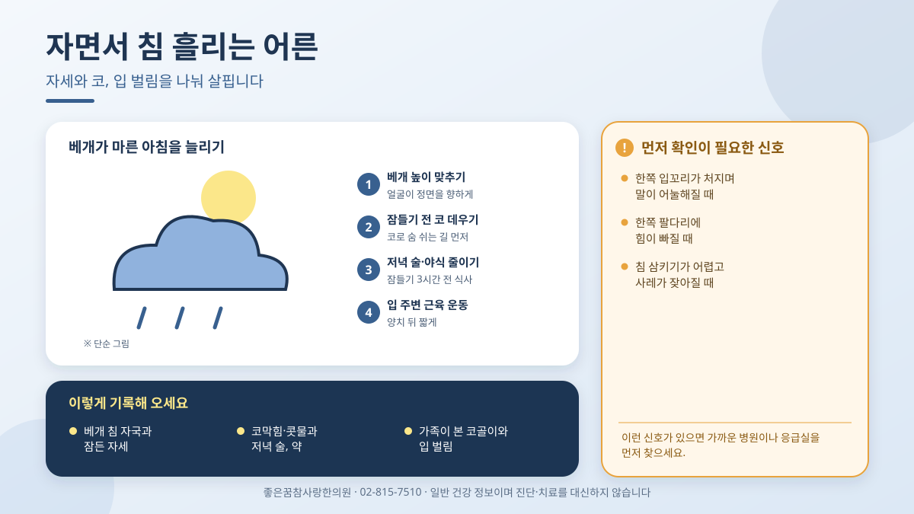

이종호 한의사 감수좋은꿈참사랑한의원 대표원장 (한의사 면허번호 19769)발행 2026-11-26 · 수정 2026-11-26
이 글의 차례
아침 알람을 끄고 고개를 드는데 볼 아래가 축축합니다. 베개 커버에 동그랗게 침 자국이 번져 있고, 입가에는 마른 침 자국이 하얗게 남아 있습니다. 함께 자는 가족이 웃으며 "어젯밤에도 침 흘리더라" 하고 말하면 괜히 얼굴이 화끈해집니다.
아이들이 자면서 침을 흘리는 것은 흔히 귀엽게 여기지만, 어른이 되어서도 그러면 부끄러워서 어디 말하기도 어렵습니다. 그래서 진료실에서도 다른 이야기를 한참 나누다가 마지막에 조심스럽게 "그런데 이것도 여쭤봐도 될까요" 하고 꺼내시는 경우가 많습니다.
먼저 안심하셔도 됩니다. 자면서 침을 흘리는 것은 어른에게도 꽤 흔한 일이고, 대부분은 잠자는 자세나 코막힘, 피로처럼 생활 속 이유와 닿아 있습니다. 다만 갑자기 시작되었거나 다른 변화가 함께 있다면 한 번 차분히 들여다볼 만합니다.
침 자국 하나에도 잠의 깊이와 숨 쉬는 길, 속의 상태가 담겨 있습니다. 그래서 저는 이 이야기를 들으면 침만 보지 않고 코와 입, 잠과 소화를 함께 여쭙습니다.
자면서 침을 흘리는 것은 어떤 상태인가요
우리 입에서는 하루 종일 침이 만들어집니다. 깨어 있을 때는 의식하지 않아도 수시로 침을 삼키지만, 깊이 잠들면 삼키는 횟수가 크게 줄어듭니다. 그 사이 입이 살짝 벌어져 있거나 고개가 옆으로 기울어 있으면 고인 침이 입꼬리로 흘러나오게 됩니다.
그래서 자면서 침을 흘리는 데에는 세 가지가 함께 작용합니다. 침이 얼마나 만들어지는지, 침을 얼마나 삼키는지, 입이 얼마나 잘 다물어져 있는지입니다. 이 셋 가운데 하나라도 기울면 베개에 침 자국이 남기 쉽습니다.
대부분은 가끔, 특히 몹시 피곤한 날이나 술을 마신 날에 생깁니다. 거의 매일 베개가 젖을 만큼 흘리거나, 낮에도 입가에 침이 고인다면 이유를 조금 더 자세히 살펴봅니다.
왜 어른도 자면서 침을 흘릴까요
가장 흔한 이유는 잠자는 자세입니다. 옆으로 눕거나 엎드려 자면 중력 때문에 침이 입꼬리 쪽으로 모이고, 볼이 베개에 눌리면서 입이 살짝 벌어집니다. 똑바로 누워 자는 분보다 옆으로 자는 분에게서 훨씬 흔하게 보입니다.
다음은 코막힘입니다. 비염이나 축농증, 감기, 코 안쪽 구조 때문에 코로 숨 쉬기가 어려우면 자는 동안 자연스럽게 입을 벌리고 숨을 쉬게 됩니다. 입이 열린 채로 오래 있으면 침이 흘러나오기 쉽고, 아침에 입안이 바짝 마르기도 합니다.
깊은 피로와 술, 수면제나 일부 신경 쓰는 약도 영향을 줍니다. 몸이 몹시 지쳐 있거나 근육이 풀어지는 약을 드시면 잠이 깊어지면서 침을 삼키는 반응과 입을 다무는 힘이 함께 느슨해집니다. 최근 새로 드신 약이 있다면 함께 말씀해 주세요.
속쓰림이나 신물이 자주 올라오는 분도 침이 많아질 수 있습니다. 위산이 식도로 올라오면 몸은 이를 씻어 내려고 침을 더 많이 만듭니다. 자다가 목이 따갑거나 아침에 입이 쓰다면 이 흐름도 함께 생각합니다.
한의학에서는 입을 다무는 힘과 침을 거두는 힘을 비위의 기운과 연결해 봅니다. 소화가 약하고 쉽게 지치며, 혀 가장자리에 이 자국이 남고 몸이 잘 붓는 분들에게서 침 흘림이 함께 나타나는 경우가 많습니다.
입 벌림, 코골이, 이 악물기와는 어떻게 이어져 있나요
자면서 침을 흘리는 분 가운데 상당수는 입을 벌리고 자는 습관이 있습니다. 입을 벌리고 자면 침 흘림과 함께 아침 입마름, 목 칼칼함, 입냄새가 같이 오기 쉽습니다. 이런 변화가 함께 있다면 코로 숨 쉬는 길부터 살펴봅니다.
코를 크게 골거나 자다가 숨이 멎는 것 같다는 말을 들으셨다면 수면무호흡도 함께 생각해야 합니다. 숨길이 좁아지면 입을 벌리고 숨을 쉬게 되고, 잠이 자주 깨져 낮에 졸리고 피곤합니다. 이런 경우에는 이비인후과나 수면 클리닉 진료를 먼저 권합니다.
이를 악물거나 가는 분은 턱 근육이 긴장해 있다가 깊이 잠든 사이 갑자기 풀리면서 입이 벌어지기도 합니다. 아침에 턱이 뻐근하거나 관자놀이가 아프다면 턱관절의 상태도 함께 살펴봅니다.
낮에도 침이 고이거나 흐르는 경우는 어떻게 다른가요
자는 동안만이 아니라 깨어 있을 때도 입가에 침이 고이거나 흐른다면 조금 다르게 살핍니다. 침을 삼키는 힘이 약해졌거나, 입 주변 근육의 움직임이 한쪽으로 떨어졌거나, 입안에 염증이나 상처가 있어 침이 많아진 경우를 함께 생각합니다.
치아 교정 장치나 새 틀니를 끼운 뒤에 침이 많아지는 분도 있습니다. 입안에 낯선 것이 들어오면 몸이 침을 더 만들어 내기 때문입니다. 대개 적응하면서 줄어들지만, 오래 이어지면 치과 선생님과 상의해 보세요.
안면마비를 앓은 뒤 한쪽 입꼬리의 힘이 덜 돌아와 그쪽으로 침이 새는 경우도 있습니다. 이런 이력이 있다면 언제 어느 쪽이었는지 함께 말씀해 주시면 얼굴 근육을 살피는 데 도움이 됩니다.
함께 자는 가족이 알려 주면 좋은 것
침 흘림은 본인이 잠든 사이에 일어나서 가족의 눈이 큰 도움이 됩니다. 입을 벌리고 자는지, 코를 고는지, 숨이 잠깐 멎었다가 몰아쉬는지, 이를 가는 소리가 나는지를 며칠만 살펴봐 달라고 부탁해 보세요.
휴대폰으로 잠든 모습을 몇 분 정도 녹음하거나 촬영해 오시는 것도 좋은 방법입니다. 진료실에서 말로 설명하기 어려운 숨소리와 자세를 직접 확인할 수 있어서, 살피는 방향을 정하는 데 큰 도움이 됩니다.
침 흘림을 겪는 분들이 자주 헷갈리는 것
첫째, 침을 흘리는 것은 잠을 잘 잤다는 뜻이라는 생각입니다. 깊이 잠들면 침을 덜 삼키는 것은 맞지만, 침 흘림이 매일 이어진다면 입 벌림이나 코막힘처럼 잠의 질을 떨어뜨리는 이유가 숨어 있을 수 있습니다.
둘째, 나이가 들면 당연히 생기는 일이라는 생각입니다. 연세가 드시면 입 주변 근육의 힘이 조금 줄어드는 것은 사실이지만, 그렇다고 그냥 두어야 하는 것은 아닙니다. 자세와 코, 입 주변 근육을 함께 살피면 달라지는 부분이 있습니다.
셋째, 테이프로 입을 막고 자면 해결된다는 생각입니다. 코가 막혀 있는 상태에서 입을 막으면 숨쉬기가 오히려 힘들어질 수 있습니다. 입을 다물게 하는 도구는 코로 편하게 숨 쉴 수 있는지 먼저 확인한 뒤에 생각하시는 것이 좋습니다.
먼저 이렇게 여쭙니다
처음 오시면 저는 대략 이런 순서로 여쭙니다. 정확하지 않아도 괜찮으니 떠오르는 대로 말씀해 주시면 됩니다.
- 자면서 침을 흘린 지 얼마나 되었나요? 갑자기 시작되었나요?
- 주로 어떤 자세로 주무시나요? 옆으로, 엎드려, 똑바로?
- 코가 자주 막히거나 코를 고는 편인가요?
- 아침에 입이 마르거나 목이 칼칼하고, 입냄새가 나나요?
- 속쓰림, 신물, 입이 쓴 느낌이 있나요?
- 수면제나 새로 드신 약, 저녁 술 습관은 어떤가요?
이 대답들을 맥과 혀, 얼굴과 입 주변의 움직임과 함께 놓고 보면 자세와 습관 쪽인지, 코와 숨길 쪽인지, 속과 기운 쪽인지가 조금씩 나뉩니다.
일상에서 먼저 해 볼 수 있는 것
침 흘림은 잠자는 환경과 습관에 따라 꽤 달라집니다. 한꺼번에 바꾸기보다 하나씩 골라 2주 정도 이어 보세요.
- 똑바로 누워 자는 연습을 해 보고, 옆으로 잘 때는 베개 높이를 맞추기
- 잠들기 전 코를 미지근한 물로 가볍게 세척하거나 따뜻한 수건으로 데우기
- 침실은 너무 건조하지 않게, 너무 덥지 않게 유지하기
- 저녁 술과 늦은 야식은 횟수부터 줄이기
- 잠들기 2~3시간 전에는 식사를 마치기
- 낮에 입술을 가볍게 다물고 코로 숨 쉬는 시간을 의식해서 늘리기
베개는 생각보다 중요합니다. 너무 높으면 고개가 앞으로 숙여져 입이 벌어지고, 너무 낮으면 옆으로 누웠을 때 얼굴이 베개에 눌립니다. 누웠을 때 목과 어깨가 편하고, 얼굴이 정면을 향하는 높이를 찾아보세요.
입 주변 근육을 깨우는 간단한 운동도 도움이 될 수 있습니다. 입술을 꼭 다물고 볼에 바람을 넣었다 빼기, 입꼬리를 양옆으로 당겼다가 오므리기, 혀끝을 윗니 뒤 입천장에 붙이고 몇 초 머물기를 하루 몇 차례 해 보세요.
이런 운동은 한 번에 오래 하기보다 양치 뒤나 세수할 때처럼 이미 하는 일에 붙여 짧게 이어 가는 쪽이 오래갑니다.
코로 숨 쉬는 것이 불편하다면 그것부터 살피는 것이 순서입니다. 코막힘이 오래가거나 누런 콧물이 이어진다면 이비인후과 진료를 함께 받아 보시고, 비염이 있다면 생활에서 코를 편하게 하는 습관을 함께 챙겨 주세요.
계절과 생활 리듬에 따라 달라지는 침 흘림
겨울에는 난방으로 공기가 건조해지고 감기와 비염이 잦아 코가 막히기 쉽습니다. 그만큼 입을 벌리고 자는 날이 늘어나 침 흘림도 함께 늘었다는 분이 많습니다. 가습기를 적당히 쓰고, 잠들기 전 코를 따뜻하게 데워 주세요.
야근이나 시험 기간처럼 몹시 지친 시기에는 잠이 한꺼번에 깊어지면서 침 흘림이 심해지기도 합니다. 피로가 쌓인 날에는 일찍 잠자리에 들어 잠을 고르게 채우는 것이 도움이 될 수 있습니다.
한의원에서 함께 살필 수 있는 경우
- 거의 매일 자면서 베개가 젖을 만큼 침을 흘리는 경우
- 침 흘림과 함께 아침 입마름, 목 칼칼함, 입냄새가 이어지는 경우
- 코막힘이나 비염이 잦아 입을 벌리고 자는 경우
- 소화가 약하고 쉽게 지치며 몸이 잘 붓는 경우
- 턱이 뻐근하거나 이를 악무는 습관이 함께 있는 경우
좋은꿈참사랑한의원에 오시면 먼저 아래 '먼저 확인이 필요한' 신호가 없는지부터 봅니다. 그다음 맥과 혀, 얼굴과 입 주변 근육, 코로 숨 쉬는 상태, 잠과 소화를 함께 여쭙습니다.
진찰한 내용을 바탕으로 생활에서 바꿔 볼 것 하나와 함께 침이나 한약 상담 가운데 지금 상태에 맞는 것을 정합니다. 턱 주변이 긴장되어 있다면 그 부위를 함께 살피기도 합니다. 한약을 상의할 때는 드시는 약을 모두 확인하고 신중하게 정합니다.
다른 병원에서 처방받아 드시는 약은 처방한 선생님과 상의 없이 멈추지 않습니다. 수면제처럼 잠을 깊게 하는 약이 원인으로 의심되더라도 조정은 처방한 선생님과 상의해서 정하시도록 안내합니다. 임신 중이시라면 진료 전에 먼저 알려 주세요.
한의원 진료는 이비인후과나 치과, 수면 클리닉 진료를 대신하는 것이 아니라 나란히 가는 것입니다. 코와 숨길, 치아와 턱의 구조는 그쪽에서 확인하고, 한의원에서는 잠의 흐름과 소화, 기운, 입 주변 근육의 긴장을 함께 들여다본다고 생각해 주시면 됩니다.
침 흘림은 몇 번 만에 확 달라지기보다 자세와 코, 생활 습관이 함께 바뀌면서 조금씩 줄어드는 경우가 많습니다. 그래서 처음 몇 주는 기록을 함께 보며 무엇이 침 흘림을 부르는지 찾는 데 시간을 들입니다.
이렇게 기록해 오시면 상담이 쉬워집니다
침 흘림은 잠든 사이에 일어나서 스스로 알기 어렵습니다. 1~2주만 간단히 적어 보세요.
- 아침에 베개에 침 자국이 있었는지, 양은 어땠는지
- 잠든 자세와 베개 높이
- 그날 코막힘이나 콧물이 있었는지
- 저녁 술, 늦은 식사, 드신 약
- 아침 입마름, 목 칼칼함, 입냄새 여부
- 함께 자는 가족이 본 코골이나 입 벌림
기록을 나란히 놓고 보면 코가 막힌 날인지, 피곤하거나 술을 마신 날인지, 특정 자세로 잔 날인지가 보이기 시작합니다. 그 흐름이 무엇부터 바꿀지 정하는 실마리가 됩니다.
편안한 잠과 마른 베개를 위해
자면서 침을 흘리는 것은 부끄러운 일이 아니라, 잠자는 동안 내 몸이 보내는 작은 신호입니다. 그 신호를 따라가 보면 코로 숨 쉬는 길, 잠의 깊이, 속의 상태까지 함께 살필 수 있습니다.
베개가 마른 아침이 하루 이틀 늘어나는 것은 잠이 조금 더 편안해지고 있다는 반가운 신호이기도 합니다. 부끄러워 혼자 고민하기보다 편하게 이야기를 꺼내 주세요. 진료실에서는 흔하게 나누는 이야기입니다.
이번 주에는 하나만 골라 보세요. 베개 높이 맞추기, 잠들기 전 코 데우기, 저녁 술 한 번 줄이기. 다음에 오시면 아침 베개 기록부터 함께 펼쳐 보겠습니다.
이런 증상은 먼저 확인이 필요합니다
- 갑자기 한쪽 입꼬리가 처지면서 침이 새고 말이 어눌해지거나 한쪽 팔다리에 힘이 빠지는 경우
- 침을 삼키기 어렵고 음식이 목에 자주 걸리며 사레가 잦아지는 경우
이런 신호가 있으면 한의원보다 가까운 병원이나 응급실을 먼저 찾으세요.
함께 읽으면 좋은 글
- 자고 일어나면 입이 바짝 마르고 목이 칼칼할 때는 어떻게 살피나요?
- 코를 크게 골고 자다가 숨이 멎는 것 같을 때는 어떻게 하나요?
- 코막힘과 누런 콧물이 오래가는 만성 부비동염(축농증)은 어떻게 살피나요?
- 속쓰림과 신물이 오래 갈 때 어떤 점을 살펴보고, 언제 검사를 받아야 하나요?
- 혀 가장자리의 이 자국과 혀의 갈라짐은 무엇을 살피는 단서인가요?

여쭙는 것
- 자면서 침을 흘린 지 얼마나 되었나요? 갑자기 시작되었나요?
- 주로 어떤 자세로 주무시나요? 옆으로, 엎드려, 똑바로?
- 코가 자주 막히거나 코를 고는 편인가요?
생활에서 해 볼 것
- 똑바로 누워 자는 연습을 해 보고, 옆으로 잘 때는 베개 높이를 맞추기
- 잠들기 전 코를 미지근한 물로 가볍게 세척하거나 따뜻한 수건으로 데우기
- 침실은 너무 건조하지 않게, 너무 덥지 않게 유지하기
한의원에서 함께 살필 것
- 거의 매일 자면서 베개가 젖을 만큼 침을 흘리는 경우
- 침 흘림과 함께 아침 입마름, 목 칼칼함, 입냄새가 이어지는 경우
- 코막힘이나 비염이 잦아 입을 벌리고 자는 경우
먼저 확인이 필요한 신호
- 갑자기 한쪽 입꼬리가 처지면서 침이 새고 말이 어눌해지거나 한쪽 팔다리에 힘이 빠지…
- 침을 삼키기 어렵고 음식이 목에 자주 걸리며 사레가 잦아지는 경우
한눈에 보는 표
| 구분 | 핵심 |
|---|---|
| 여쭙는 것 | 자면서 침을 흘린 지 얼마나 되었나요? 갑자기 시작되었나요? 주로 어떤 자세로 주무시나요? 옆으로, 엎드려, 똑바로? |
| 생활에서 해 볼 것 | 똑바로 누워 자는 연습을 해 보고, 옆으로 잘 때는 베개 높이를 맞추기 잠들기 전 코를 미지근한 물로 가볍게 세척하거나 따뜻한 수건으로 데우기 |
| 한의원에서 함께 살필 것 | 거의 매일 자면서 베개가 젖을 만큼 침을 흘리는 경우 침 흘림과 함께 아침 입마름, 목 칼칼함, 입냄새가 이어지는 경우 |
| 먼저 확인이 필요한 신호 | 갑자기 한쪽 입꼬리가 처지면서 침이 새고 말이 어눌해지거나 한쪽 팔다리에 힘이 빠지는 경우 침을 삼키기 어렵고 음식이 목에 자주 걸리며 사레가 잦아지는 경우 |
자주 묻는 질문
어른이 자면서 침을 흘리는 건 이상한 건가요?
어른에게도 꽤 흔한 일입니다. 대부분 잠자는 자세나 코막힘, 피로와 관련이 있어서, 어떤 날에 심한지 살펴보면 실마리가 보이는 경우가 많습니다.
옆으로 자면 침을 더 흘리나요?
옆으로 눕거나 엎드려 자면 침이 입꼬리 쪽으로 모이고 볼이 눌려 입이 벌어지기 쉽습니다. 똑바로 누워 자는 연습과 베개 높이 조절이 도움이 될 수 있습니다.
입에 테이프를 붙이고 자도 괜찮나요?
코가 막혀 있다면 오히려 숨쉬기가 힘들어질 수 있습니다. 코로 편하게 숨 쉴 수 있는지 먼저 확인하신 뒤 상의해 주세요.
침 흘림도 한의원에서 살펴볼 수 있나요?
진찰한 뒤 자세와 습관, 코와 숨길, 속과 기운 가운데 어느 쪽이 앞서는지 보고 생활 관리와 침, 한약 상담 가운데 맞는 것을 정합니다. 드시는 약을 모두 확인한 뒤 신중하게 상의합니다.
좋은꿈참사랑한의원은 재진 때 지난번 이야기부터 이어서 여쭙니다. 진료시간과 예약은 오시는 길에서 확인하세요.
어디서 상담받을 수 있나요?
좋은꿈참사랑한의원은 서울 동작구 만양로2길 2 신성빌딩 3층·5층(서울 동작구 상도동, 7호선 상도역 3번 출구 근처)에 있습니다. 한의사 3명(이종호 대표원장, 조영기 수석진료원장, 정원영 진료원장)이 진료합니다. 진료시간은 평일 09:30~20:00(점심 13:00~14:00), 토·일·공휴일 09:30~15:00이며, 방문 전 전화로 확인을 권합니다. 예약은 네이버 예약, 카카오톡 상담, 전화 02-815-7510로 받습니다.
이 글은 일반적인 건강 정보이며 개인의 진단이나 치료를 대신하지 않습니다. 증상이 있거나 복용 중인 약이 있다면 진료를 통해 확인하세요. 치료 효과는 개인마다 다를 수 있습니다.
작성 기준: 일반적으로 알려져 있는 건강 정보를 참고해 정리했습니다(대표원장 감수). 증상 기록은 1~2주 동안 하루 1회, 비슷한 시간에 적어 오시면 지난 상태와 비교하기 쉽습니다.